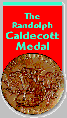

1999 * Snowflake Bentley Mary Azarian (Juv QC858.B46M37-1998)(ARL 4.1)
Duke Ellington Brian Pinkney (Andrea David Pinkney) (Juv ML 3930.E44P56-1998) (ARL 9.0)1998 * Rapunzel Paul O. Zelinsky Juv PZ8.Z38Rap-1997 (ARL 3.9)
Gardener David Small (Sarah Stewart) Juv
PZ7.S84985Gar (IL PreS+ )
Harlem Christopher Myers (Walter Dean Myers)
Juv PS3563.Y48H37 (IL K-12)
There Was an Old Lady Who Swallowed a Fly
Simms Taback Juv PZ8.3.T1145Th (IL PreS-3)
1997 *Golem David Wisniewski Juv BM531.W57-1996
Hush! A Thai Lullaby Holly Meade Juv PS3558.O316H87
(ARL 4.1)
Graphic Alphabet David Pelletier Juv PE1155.P45
Paperboy Dav Pilkey Juv PZ7.P63123Pap
(ARL 3.9)
Starry Messenger Peter Sis Juv QB36.G2S57
(ARL 5.5)
1996 *Officer Buckle and Gloria Peggy Rahmann Juv PZ7.R1936Of-1995
(ARL 3.6)
Alphabet City Stephen T Johnson Juv PE1155J645
Zin! Zin! Zin! A Violin Marjorie Priceman
Juv PZ8.3.M8464Zi (ARL 4.9 )
Faithful Friend Brian Pinkney (Robert D.
San Souci) Juv PZ8.1.S227Fai (ARL 5.0 )
Tops and Bottoms Janet Stevens JuvPZ 8.1.S8572To
(ARL 2.0 )
1995 *Smoky Nights. (Eve Bunting) David Diaz Juv PZ7.B91527Sl-1994
(ARL3.0 )
Swamp Angel il Paul Zelinsky (Isaacs) Juv
PZ7.I762Sw-1994 (ARL 4.0 )
John Henry il Jerry Pinkney (Lester) Juv
PZ8.1.L434Jo-1994 (ARL 4.7 )
Time Flies Eric Rohmann Juv PZ7.R6413Ti-1994
1994 *Grandfather's journey. Allen Say Juv PZ 7.S2744Gr 1993
(ARL3.0 )
In the Small, Small Pond. Denise Fleming
Juv PZ8.3.F6378Im (ARL1.4 )
Owen. Kevin Henkes Juv PZ7.H389Ow (ARL3.0
)
Peppe the Lamplighter. Ted Lewin (Bartone)
Juv PZ7.B28563Pe (ARL4.5 )
Raven. Gerald McDermott Juv E99.N77M33 (ARL2.9
)
Yo! Yes? Chris Raschka Juv PZ7.R18148Yo
1993 *Mirette on the High Wire. Emily Arnold McCully Juv PZ 7.M478415Mi
1992 (ARL 2.9 )
Seven Blind Mice Ed Young Juv PZ8.2.Y68SE
1992 (ARL2.5 )
The Stinky Cheese Man & other ... tales
Lane Smith (Scieczka) Juv PZ 8.S3134St-1992 (ARL 3.9 )
Working Cotton Byard (Williams) Juv PZ 7.W668174Wo-1992
1992 *Tuesday. David Wiesner Juv PZ7.W6367 Tu 1991
Tar Beach Faith Ringgold Juv PZ7.R4726Tar-1991
(ARL 4.4 )
1991 *Black and White David Macaulay Juv PZ7.M1197 Bi 1990
More, More, More, Said the Baby Vera B. Williams
Juv PZ7.W6685Mo-1990
1990 *Lon Po Po EdYoung Juv PZ8.1.Y84 LO 1989 (ARL 3.9 )
Color Zoo. Lois Ehlert Juv ND1490.E35 1989
Hershel and the Hanukkah Goblins il Trina
S. Hyman (Kimmel) Juv PZ7.K5648He
Bill Peet Bill Peet PS3566.E29Z464 (RL 5.9
AR4.0)
Talking Eggs. il Jerry Pinkney (San Souci)
Juv PZ8.1.S227Tal-1989 (ARL2.9 )
| 1980's | 1970's | 1960's |
| 1950's | 1940's | 1930's |
1988 *Owl Moon (Yolen) Schoenherr Juv PZ7.Y78 Ow 1987 (ARL 2.9
)
Mufaro's Beautiful Daughters John Steptoe
Juv PZ7.S585Mu-1989 (ARL 4.6 )
1987 *Hey, Al (Yorinks) Egielski Juv PZ7.Y819 HE 1986 (ARL 3.8
)
Village of Round and Square Houses. Ann Grifalconi
Juv PZ8.1.G874Vi-1986 (ARL2.8 )
Alphabatics. Suse MacDonald Juv PE 1155.M3-1986
Rumpelstiltskin. Paul O. Zelinsky Juv PZ8.Z38Ru-1986
(ARL3.7 )
1986 *Polar Express Van Allsburg Juv PZ7.V266 PO 1985 (ARL3.1
)
The Relatives Came. il Gammell (Rylant) Juv
PZ7.R982Re-1985 (ARL3.6 )
King Bidgood's in the Bathtub. il Don Wood
(Audrey Wood) Juv PZ7.W846Ki
1985 *Saint George and the Dragon (Hodges) il Hyman Juv PZ8.1.H69
SAI (ARL3.9 )
Hansel and Gretel. il Zelinsky (Lesser) Juv
PZ8.L4785Han (ARL3.7 )
The Story of Jumping Mouse. John Steptoe
Juv E 78.G73S78-1984 (ARL2.8 )
Have You Seen My Duckling? Nancy Tafuri Juv
PZ7.T117 Hav-1984
1984 *Glorious Flight Provensen Juv TL721.B5 P76 1983 (ARL3.4
)
Ten, Nine, Eight. Molly Bang Juv PZ8.3.B22te
1983
Little Red Riding Hood. Trina Schart Hyman
Juv PZ8.H994Li 1983 (ARL3.9 )
1983 *Shadow Brown (Cendrars) Juv PQ 2605.E55 F4713
When I was Young in the Mountains il Goode
(Rylant) Juv PZ7.R982Wh (ARL4.8 )
A Chair for My Mother. Vera B. Williams Juv
PZ7.W6685 Ch 1982 (ARL2.5 )
1982 *Jumanji Van Allsburg Juv PZ7.V266 JU (ARL3.5 )
Where the Buffaloes Begin. il Stephen Gammell
(Baker) Juv PZ7.B1748Wh (ARL6.9 )
On Market Street. il Anita Lobel (Arnold
Lobel) Juv PZ8.3.L817On
Outside over There. Maurice Sendak Juv PZ8.S3294
Ou
A Visit to William Blake's Inn il Provensen
(Willard)Juv PS3573.144V5 (ARL4.6 )
1981 *Fables Lobel, Arnold Juv PZ8.2.L6 FAB
The Grey Lady and the Strawberry Snatcher.
Molly Bang Juv PZ7.B2217Gr
Truck. Donald Crews Juv PZ7.C8682Tr
Mice Twice. Joseph Low Juv PZ7.L9598Mi
The Bremen-town Musicians. Ilse Plume Juv
PZ8.P727Br
1980 *Ox-Cart Man Barbara Cooney (Hall) Juv PZ7.H14115OX (ARL3.9
)
Ben's Trumpet. Rachel Isadora Juv PZ7.I763Be
The Treasure. Uri Shulevitz Juv PZ8.1.S5596Tr
1978 (ARL4.2 )
The Garden of Abdul Gasazi. Chris Van Allsburg
Juv PZ7.V266Gar
| 1980's | 1970's | 1960's |
| 1950's | 1940's | 1930's |
1978 *Noah's Ark. Peter Spier il. Juv PZ8.3.R3 NO
Castle. David Macaulay Juv UG 405.M18 (ARL7.0
)
It Could Always Be Worse. Margot Zemach Juv
PZ8.1.Z4It (ARL2.3 )
1977 *Ashanti to Zulu (Musgrove) Dillon il Juv GN645.M87 (ARL4.6
)
Amazing Bone, William Steig il. Juv PZ7.S8177Am
(ARL3.2 )
Contest, Nonny Hogrogian il. Juv PZ8.1.H723Co4
Hawk, I'm Your Brother, Parnall il. (Baylor)Juv
PZ7.B3435Haw (ARL3.2 )
1976 *Why Mosquitoes Buzz in People's Ears il. Dillon (Aardema)Juv
PZ8.1.A213 Wh (ARL 3.2)
Desert is Theirs, Parnall il. (Baylor) Juv
QH 541.5.D4B38 (ARL2.0 )
Strega Nona, Tomie dePaola il. Juv PZ8.1.D43
St (ARL3.8 )
1975 *Arrow to the Sun McDermott Juv PZ8.1.M159 AR (ARL3 )
Jambo Means Hello, Feelings Juv PL
8701.F4
1974 *Duffy and the Devil Zemach Juv PZ8.1.Z38 DU3 (ARL4.6 )
Cathedral, David Macauley NA 4830.M32
Three Jovial Huntsmen, Susan Jeffers il.
Juv PZ8.3.J393Th
1973 *The Funny Little Woman Blair Lent il. (Mosel)
Juv PZ8.1.M8346 FU (ARL3.7 )
Anansi the Spider, Gerald McDermott il. Juv
PZ8.1.M159An
Hosie's Alphabet, Baskin Juv Pe1151.B28
When Clay Sings, Tom Bahti il. (Baylor) Juv
E78S7B36
1972 *One Fine Day Hogrogian Juv PZ7.H6844 ON (RL3.7 AR0.5)
Hildilid's Night, Arnold Lobel il. (Ryan)
Juv PZ7.R949Hi
If All the Seas Were One, Janina Domanska
il. Juv PZ8.3.D698If
Moja Means One, Feelings Juv PZ9.F3Mo
1971 *A Story, A Story Hailey Juv PZ8.1.H139 ST
Angry Moon, Blair Lent il. (Sleator) Juv
PZ8.1.S627An
Frog and Toad Are Friends, Arnold Lobel
Juv PZ7.L7795Fr (ARL1.4 )
In the Night Kitchen, Maurice Sendak
Juv PZ7.S47In
1970 *Sylvester and the Magic Pebble Steig Juv PZ10.3.S816 SY
(ARL2.6 )
Alexander and the Wind-Up Mouse, Leo Lionni
Juv PZ7.L6634A4-1989 (ARL3.4 )
Goggles, Ezra J. Keats Juv PZ7.K2253Go
Judge, Zemach Juv PZ8.3.Z38Ju
Pop Corn & Ma Goodness, (Preston) Parker
il. Juv PZ8.3.P913Po
Thy Friend, Obadiah, Brinton Turkle
Juv PZ7.T847Th
| 1980's | 1970's | 1960's |
| 1950's | 1940's | 1930's |
1968 *Drummer Hoff Emberley Juv PZ8.3.E515 DR (ARL4.4 )
Frederick, Leo Lionni Juv PZ10.3.L6465Fr5
(ARL3.5 )
Emperor and the Kite, Young il. (Yolen) Juv
PZ8.1.Y815Em (ARL3.8 )
Seashore Story, Taro Yashima Juv PZ7.Y212Se
1967 *Sam, Bangs and Moonshine Ness Juv PZ7.N4382 SAM (ARL3.4
)
One Wide River to Cross, Emberley Juv
PZ8.3.E515On
1966 *Always Room for One More Hogrogian (Leodhas)Juv PZ8.3.A388
An (ARL3.9 )
Hide and Seek Fog, Duvoisin il. (Tresselt)
Juv PZ7.T732Hi (ARL3.9 )
Just Me, Marie H. Ets Juv PZ7.E855Ju
Tom Tit Tot, Evaline Ness Juv PZ8.1.T56To
(ARL2.3 )
1965 *May I Bring a Friend? Montresor (DeRegniers) Juv PZ7.D4417
MAY (ARL2.2 )
Pocketful of Cricket, Evaline Ness il. (Caudill)
Juv PZ7.C274Po
Rain Makes Applesauce, Marvin Bileck il.
(Scheer) Juv PZ7.S3424Rai
Wave, Blair Lent il. (Hodges) Juv PZ8.1.H69Wav
1964 *Where the Wild Things Are Sendak, Maurice Juv PZ8.S3294
Wh (ARL2.9 )
Mother Goose and Nursery Rhymes, Philip Reed
il.Juv PZ8.3.M85Rc
Swimmy, Leo Lionni Juv PZ10.3.L6465Sw (ARL2.8)
1963 *The Snowy Day Keats Juv PZ7.K2253 SN (ARL1.8 )
Mr. Rabbit and the Lovely Present,
Sendak il. (Zolotow)Juv PZ7.Z77Mi (ARL1.6 )
1962 *Once a Mouse Brown Juv PZ8.2.H5On (ARL 3.8 )
Day We Saw the Sun Come Up, Adams il. (Goudey)
Juv PZ7.G705Day
Fox Went Out on a Chilly Night, Peter Spier
il. Juv PZ8.3.F825 (ARL2.9 )
Little Bear's Visit, Sendak il.(Minarik)
Juv PZ10.3.M628Lm (ARL1.5 )
1961 *Baboushka and the Three Kings Sidjakov il. (Robbins) Juv
PZ8.1.R5 BAB
Inch by Inch, Leo Lionni Juv PZ10.3.L6465In
(ARL2.7 )
1960 *Nine Days to Christmas Ets Juv PZ7.E855 WI
Houses from the Sea, Adrienne Adams il. (Goudey)
Juv PZ10.G58Ho
Moon Jumpers, Maurice Sendak il. (Udry) Juv
PZ7.U27Mo
| 1980's | 1970's | 1960's |
| 1950's | 1940's | 1930's |
1958 *Time of Wonder Robert McCloskey Juv PZ7.M1336 TI (ARL 4.5
)
Anatole and the Cat, Paul Galdone (Eve Titus)
Juv PZ10.3.T548Ap
Fly High, Fly Low, Don Freeman Juv PZ10.3.F874Fl
1957 *A Tree is Nice ( Udry) Marc Simont Juv PZ10.U4 TR (ARL1.5
)
Anatole, Paul Galdone (Titus) Juv PZ10.3.T548An
Lion, William Pene du Bois Juv PZ 7.D8527Li
1 Is One, Tasha Tudor Juv PZ8.3.T8On
1956 *Frog Went A-Courtin (Langstaff) Rojankovsky Juv PZ8.3.F92
FR
Crow Boy, Taro Yashima (pseud Iwamatsu) Juv
PZ7.I97Cr (ARL3.5 )
Play with Me, Marie Hall Ets Juv PZ10.3.E73Pl
1955 *Cinderella; or the Little Glass Slipper Marcia Brown
Juv PZ8.P426Ci (ARL 3.4 )
Book of Nursery and Mother Goose Rhymes,
Marguerite de Angeli Juv PZ8.3D345Bo
Thanksgiving Story, Helen Sewell (Dalgliesh)
Juv PZ7.D153Tg
1954 *Madeline's Rescue Ludwig Bemelmans Juv PZ7.B423 MAF (ARL1.8
)
Journey Cake, Ho!, Robert McCloskey (Ruth
Sawyer) Juv PZ7.S269Jo
Steadfast Tin Soldier, Marcia Brown (H.C.
Andersen) Juv PZ8.A542St12
Very Special House, Maurice Sendak (Ruth
Kraus) Juv PZ7.K87Ve
1953 *The Biggest Bear Lynd Ward Juv PZ10.3.W214 Bi (ARL4.1 )
Ape in a Cape, Fritz Eichenberg Juv PZ7.E343Ap
One Morning in Maine, Robert McCloskey Juv
PZ7.M1336On (ARL 3.8 )
Puss in Boots, Marcia Brown (Charles Perrault)
Juv PZ8.P426 Pu
The Storm Book Margaret Bloy Graham (Zolotow)
Juv PZ 7.Z77St
1952 *Finders Keepers (Will Lipkind) Nicolas Mordvinoff Juv PZ10.3.L647 FI
1951 *The Egg Tree Katherine Milhous Juv PZ7.M596 EG
Dick Whittington and His Cat, Marcia Brown
Juv PZ8.1.W59Dill (ARL 3.8 )
If I Ran the Zoo Dr. Seuss Juv PZ8.3.G276If
Two Reds (Lipkind) il. Mordvinoff Juv PZ7.L6337Tw
1950 *Song of the Swallows Leo Politi Juv PZ7.P753 SO (ARL4.6
)
Bartholomew and the Oobleck, Dr. Seuss Juv
PZ8.G326Bar (ARL3.7 )
The Happy Day il. Marc Simont (Ruth Kraus)
Juv PZ 10.3.K87H36-1989
Henry, Fisherman, Marcia Brown Juv PZ7.B8162He
| 1980's | 1970's | 1960's |
| 1950's | 1940's | 1930's |
1948 *White Snow, Bright Snow (Alvin Tresselt) Roger Duvoisin
Juv PZ7.T732 WH (ARL3.6 )
McElligot's Pool, Dr. Seuss (pseud Geisel)
Juv PZ8.3.G276Mac (ARL3.7 )
Song of Robin Hood, Virginia Lee Burton Juv
M1740.C3S6
Stone Soup, Marcia Brown Juv PZ7.B8162St2
(ARL2.4 )
1947 *Little Island Weisgard (Brown; Mac Donald) Juv PZ8.3.B815Li
(ARL3.6 )
Boats on the River, Barnum (Marjorie Flack)
Juv PZ7.F593 Bo
Pedro, the Angel of Olvera Street, Leo Politi
Juv PZ7.P753Pe
Rain Drop Splash, Weisgard (Tresselt) Juv
PZ7.T732Rai
Timothy Turtle, Tony Palazzo (Al Graham)
Juv PZ8.3.G725Ti
1946 *The Rooster Crows Maud & Miska Petersham (k-2) Juv
PZ8.3.P447 RO
Sing Mother Goose, Torrey il.(music by Wheeler)
Juv M1997.W5S5
My Mother is the Most Beautiful Woman in the
World, Gannett (Reyher) Juv PZ8.1.R28My
1945 *Prayer for a Child Jones (Rachel Field) (IL k-2/4) Juv
BV265.F5
Christmas Anna Angel, Kate Seredy (Ruth Sawyer)
Juv PZ7.S269Ch
In the Forest, Marie Hall Ets (P-1/2) Juv
PZ10.3.E73In
Mother Goose, Tasha Tudor il. Juv PZ8.3.M85Tu3
Yonie Wondernose, Marguertie de Angeli Juv
PZ7.D35Yo (ARL3.3 )
1944 *Many Moons Louis Slobodkin ( James Thurber) Juv PZ7.T422
MAN (ARL3.9)
Child's Good Night Book, Jean Charlot. (Margaret
Wise Brown) (P/2) Juv PZ7.B8163Ch3
1943 *Little House Virginia Lee Burton Juv PZ7.B954 LI
(ARL2.8 )
Dash and Dart, Mary & Conrad Buff Juv
PZ10.3.B78Das
Marshmallow, Clare Turlay Newberry Juv PZ7.N466Mar
1942 *Make Way for Ducklings Robert McCloskey (P-1/4) Juv PZ10.3.M1295
MAK (ARL 3.1 )
In My Mother's House, Velino Herrera (Ann
Nolan Clark) (1-4) Juv PZ9.C374In
Paddle-to-the-Sea, Holling Clancy Holling
Juv PZ7.H725Pad (ARL4.7 )
1941 *They Were Strong and Good Robert Lawson (4-6 grades) Juv
PZ7.L4384 TH
April's Kittens, Clare Turlay Newberry Juv
PZ7.N466Ap
1940 *Abraham Lincoln Ingri & Edgar D'Aulaire Juv E457.905.
A86 (aRL5.2 )
Ageless Story, Lauren Ford il. Juv ML89.F76A4
Madeline, Ludwig Bemelmans Juv PZ7.B423Mad
(ARL3.8 )
| 1980's | 1970's | 1960's |
| 1950's | 1940's | 1930's |
1938 *Animals of the Bible. (Helen Dean Fish) Dorothy P. Lathrop.
Juv BS663.B5
Four and Twenty Blackbirds, Robert Lawson
Juv PZ8.3.F632Fo-1937
Steven Simeons, Boris Artzybasheff Juv PZ8.1.A79Se